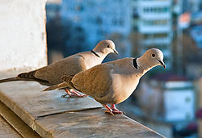
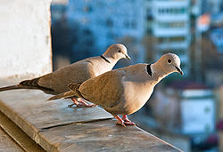

| Eurasian Collared Dove | |
|---|---|
|  | |
| Conservation status | |
| Binomial name | |
| Streptopelia decaocto (Frivaldszky, 1838) |
| Eurasian Collared Dove | |
|---|---|
|  | |
| Conservation status | |
| Binomial name | |
| Streptopelia decaocto (Frivaldszky, 1838) |
The Eurasian Collared Dove Streptopelia decaocto, most often simply called the Collared Dove,[2][3][4][5] also sometimes hyphenated as Eurasian Collared-dove[6] is a species of dove native to Asia and Europe, and also recently introduced in North America.
It is a medium sized dove, distinctly smaller than the Wood Pigeon, similar in length to a Rock Pigeon but slimmer and longer-tailed, and slightly larger than the related Turtle Dove, 30–33 cm long from tip of beak to tip of tail, with a wingspan of 47–55 cm, and a weight of 125–240 g. It is grey-buff to pinkish-grey overall, a little darker above than below, with a blue-grey underwing patch. The tail feathers are grey-buff above, and dark grey tipped white below; the outer tail feathers also tipped whitish above. It has a black half-collar edged with white on its nape from which it gets its name. The short legs are red and the bill is black. The iris is red, but from a distance the eyes appear to be black, as the pupil is relatively large and only a narrow rim of reddish-brown iris can be seen around the black pupil. The eye is surrounded by a small area of bare skin, which is either white or yellow. The two sexes are virtually indistinguishable; juveniles differ in having a poorly developed collar, and a brown iris.[2][4][5]
It is closely related to the Island Collared Dove of southeast Asia and the African Collared Dove of sub-Saharan Africa, forming a superspecies with these.[6] Identification from African Collared Dove is very difficult with silent birds, with the African species being marginally smaller and paler, but the calls are very distinct, a soft purring in African Collared Dove quite unlike the Eurasian Collared Dove's cooing.[2]

{kind=link}
{kind=link}